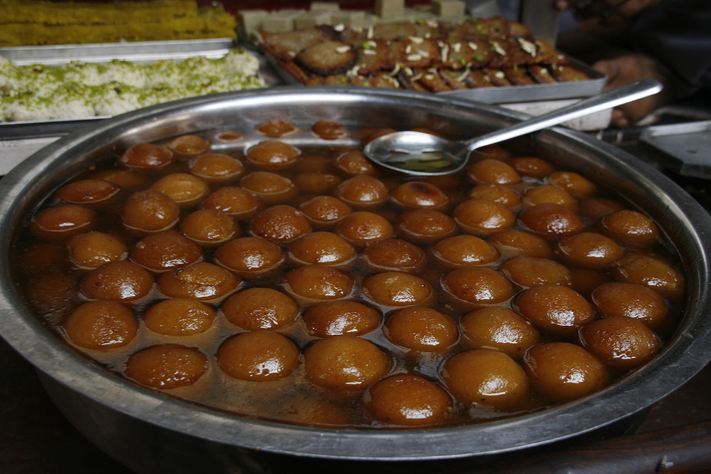
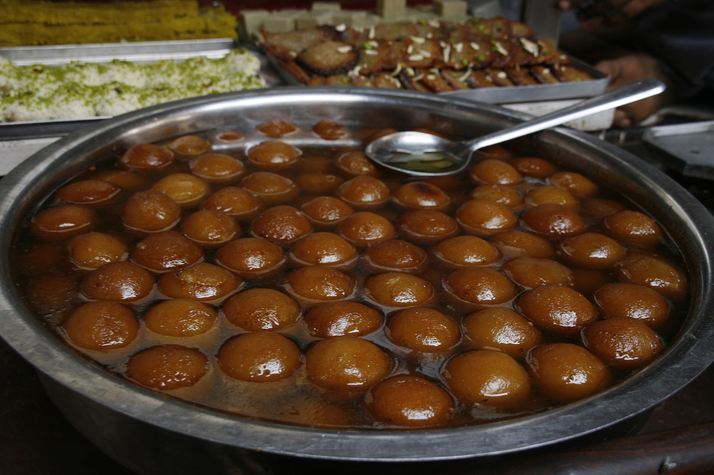

Gulab Jamun
Ingredients
- 1 cup dry milk powder
- 3 tablespoons all-purpose flour
- 2 tablespoons ghee (clarified butter), melted
- 1/2 teaspoon baking powder
- 1/2 cup warm milk
- 1 tablespoon chopped almonds (optional)
- 1 tablespoon chopped pistachio nuts (optional)
- 1 tablespoon golden raisins (optional)
- 1 pinch ground cardamom
- 1 quart vegetable oil for deep frying
- 1 1/4 cups white sugar
- 7 fluid ounces water
- 1 teaspoon rose water
- 1 pinch ground cardamom
Directions
In a large bowl, stir together the milk powder, flour, baking powder, and cardamom. Stir in the almonds, pistachios and golden raisins. Mix in the melted ghee, then pour in the milk, and continue to mix until well blended. Cover and let rest for 20 minutes.
In a large skillet, stir together the sugar, water, rose water and a pinch of cardamom. Bring to a boil, and simmer for just a minute. Set aside.
Fill a large heavy skillet halfway with oil. Heat over medium heat for at least 5 minutes. Knead the dough, and form into about 20 small balls. Reduce the heat of the oil to low, and fry the balls in one or two batches. After about 5 minutes, they will start to float, and expand to twice their original size, but the color will not change much. After the jamun float, increase the heat to medium, and turn them frequently until light golden. Remove from the oil to paper towels using a slotted spoon, and allow to cool. Drain on paper towels and allow to cool slightly.
Place the balls into the skillet with the syrup. Simmer over medium heat for about 5 minutes, squeezing them gently to soak up the syrup. Serve immediately, or chill.